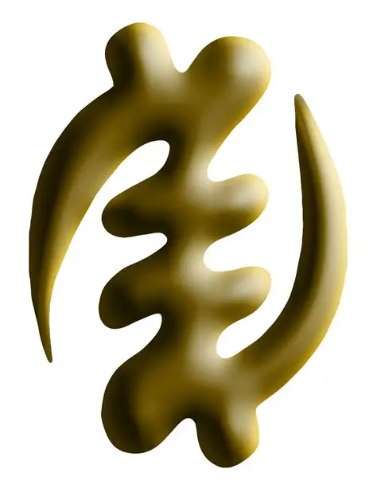
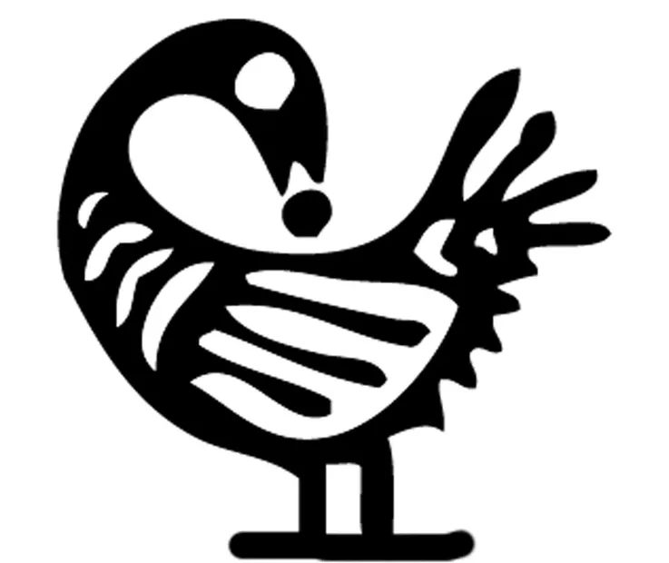
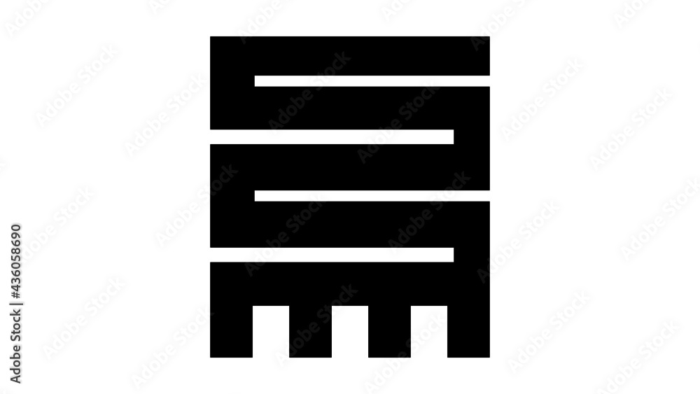
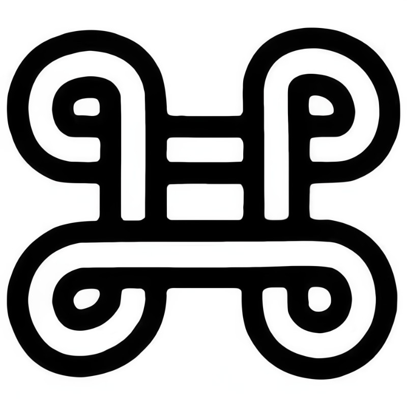
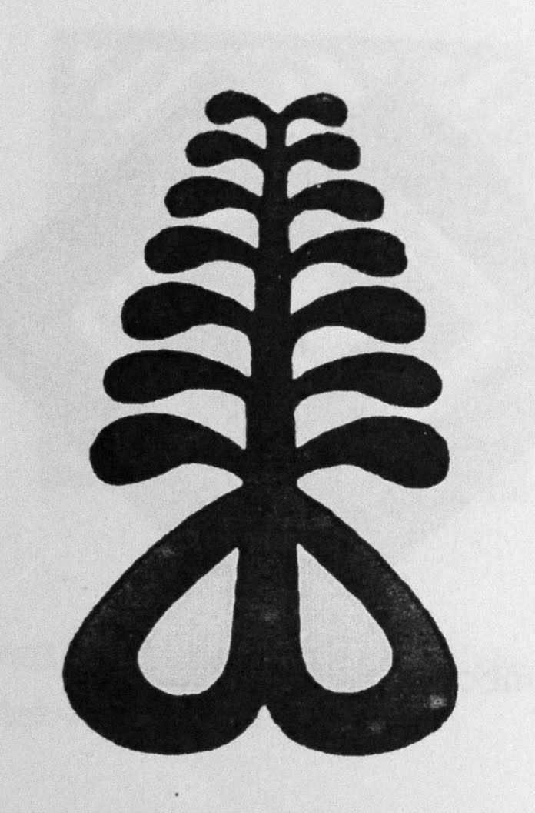

Adinkra Symbols - Visual Philosophy

Gye Nyame
"Except God"
Symbol of the supremacy and immortality of God

Sankofa
"Return and get it"
Learning from the past to build the future

Nkyinkyim
"Twisting"
Initiative, dynamism and versatility

Adwo
"Peace"
Symbol of peace, quiet and serenity
Akoma
"Heart"
Symbol of patience, tolerance and love

Osram Ne Nsoromma
"Moon and Star"
Symbol of love, bonding and faithfulness

Aya
"Fern"
Symbol of endurance and resourcefulness
Hwehwemudua
"Measuring rod"
Symbol of excellence and superior quality
Adinkra symbols represent concepts, proverbs, and traditional wisdom, serving as a visual language that communicates deep philosophical meanings.